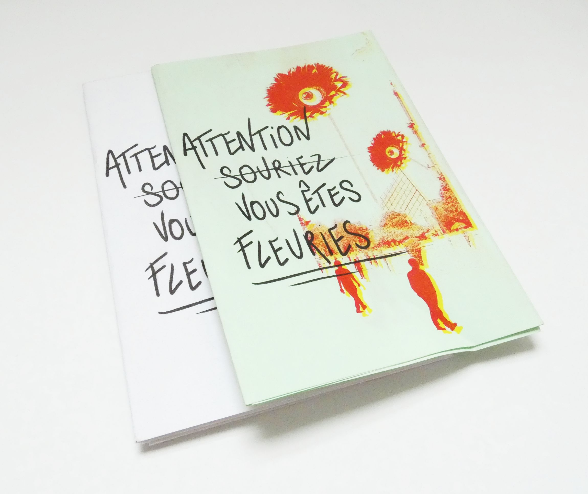
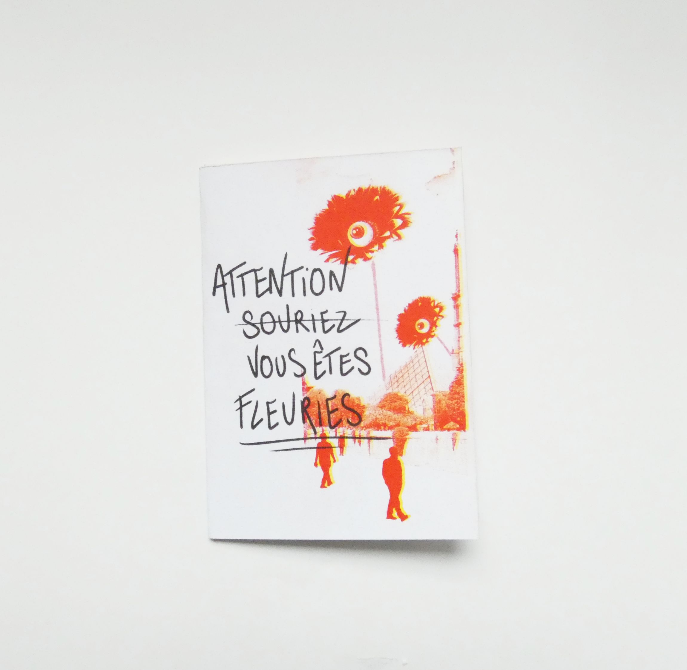
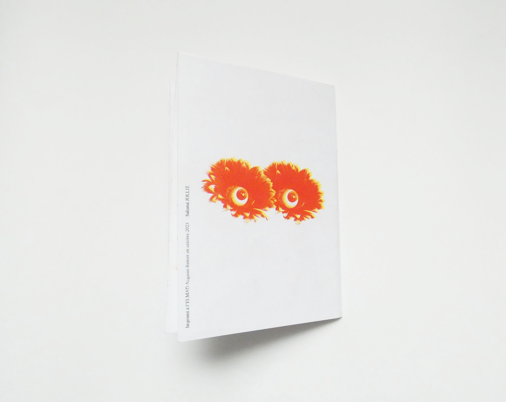
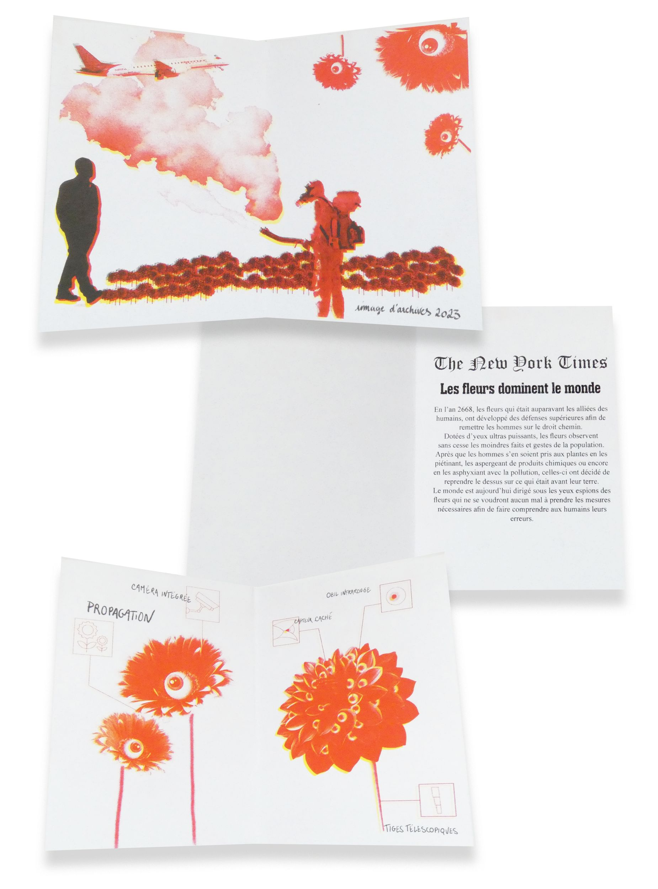
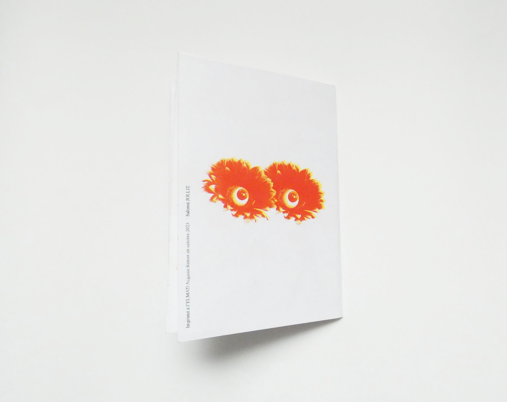
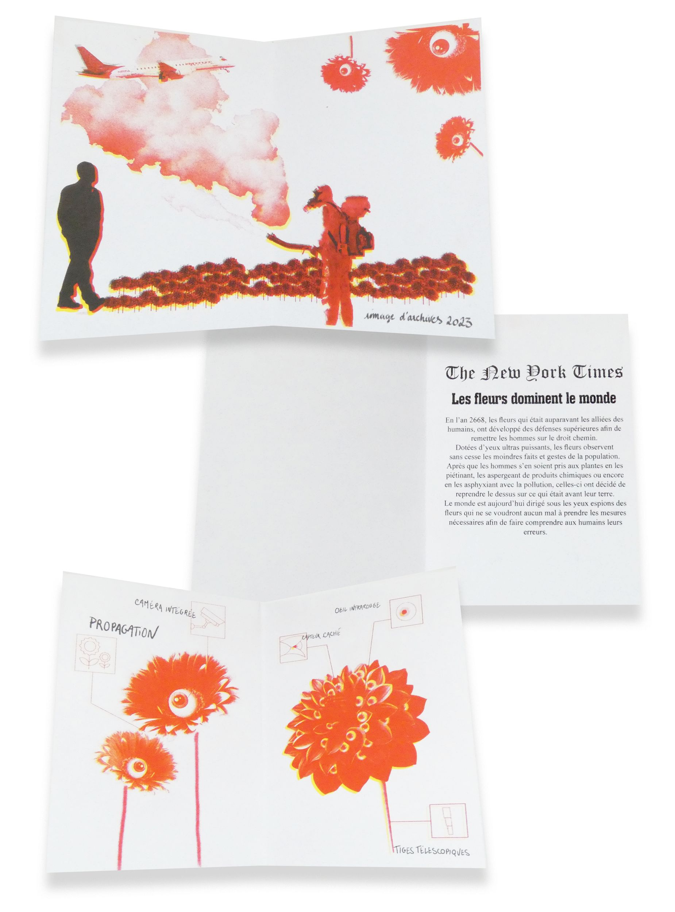
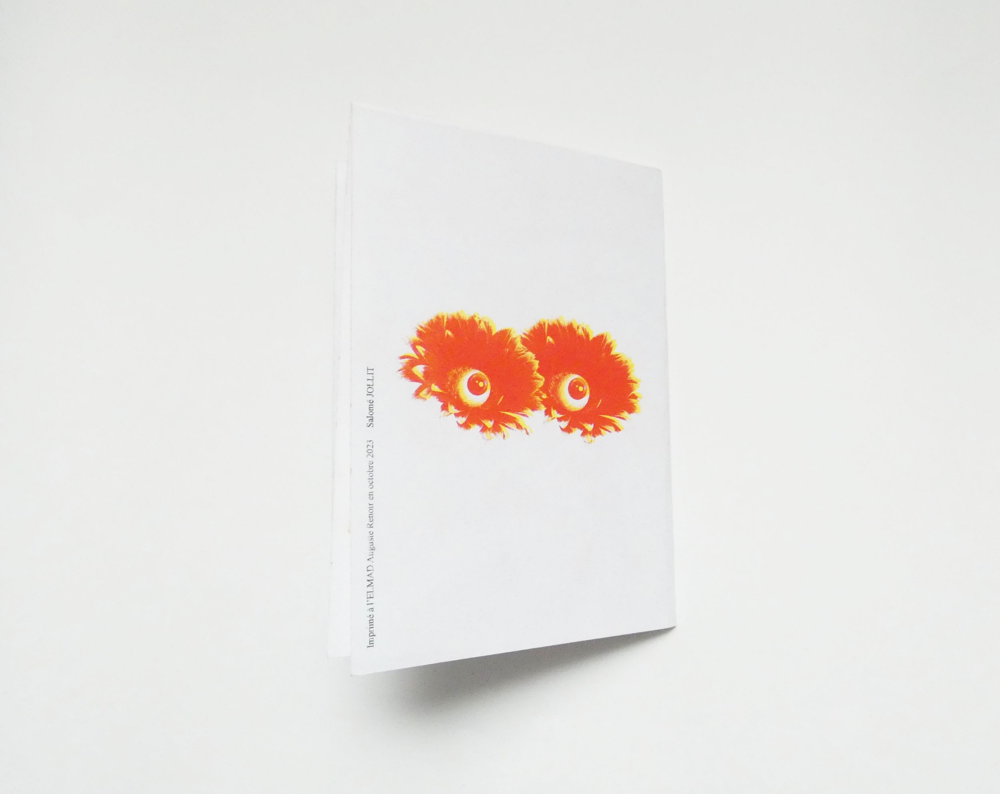
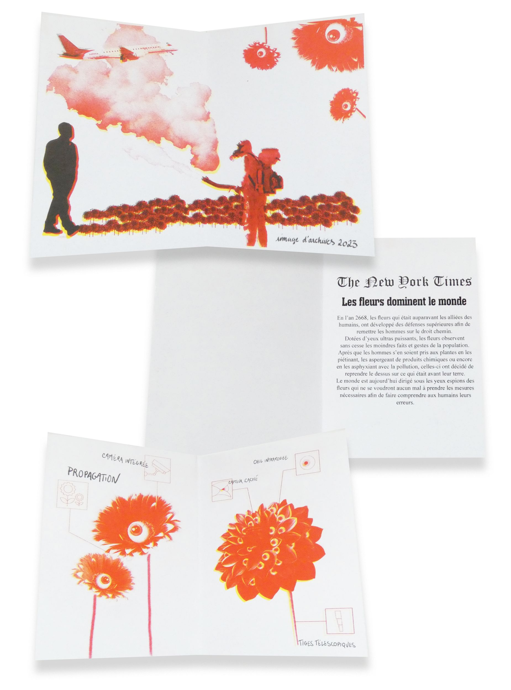

 





HERBIER IMAGINAIRE
Réalisation d’un livret en risographie. D’après les recherches, avec le réchauffement climatique les plantes seront plus grandes et volumineuses. Cela m’a amené à penser à une vengeance de la part des fleurs sur les humains afin qu’ils prennent conscience des dégâts qu’ils ont causés aux plantes avec la pollution. Ce livret est une source d’information pour montrer aux futures populations pourquoi les fleurs se sont métamorphosées.